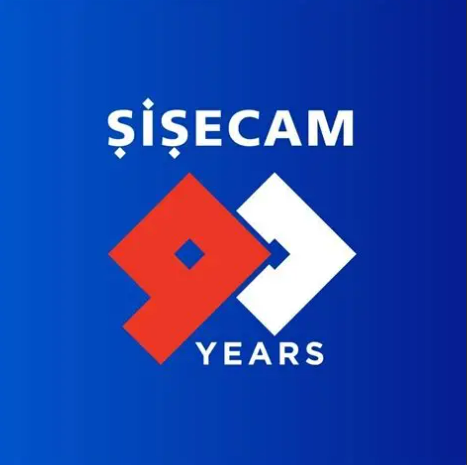

Experience, Skills, and Certifications
Professional Experience
-
Esri Turkey - Campus Ambassador
(Ankara/Turkey, 2024-Present)- Organized training sessions on the ArcGIS platform within the university and provided technical support to students.
-

Şişecam & Turkishe - "Women Advancing to the Future" Program Participant
(September 2025-Present)- Participating in intensive training sessions on leadership development, mentorship, and sectoral business processes.
-

T.C. Ministry of Transport and Infrastructure, General Directorate of Infrastructure Investments - Summer Intern
(Ankara/Turkey, 06/2025-07/2025)- Supported software integration and spatial data management of GIS-based systems; contributed to the geographic analysis processes of major infrastructure projects.
-
Kuzey Mapping Engineering - Field and Office Intern
(Bodrum/Muğla, Summer 2021, 2022 & 2023)- Performed active field measurements with Total Station and GPS/GNSS devices; involved in mapping and data processing using Netcad, QGIS, and ArcGIS.
Organizational and Volunteer Work
-
Bamboo Education Platform
- Corporate Relations and Resource Development Team Member (08/2025-Present) -
Geospatial Information Community
- Supervisory Board Member (2024-Present) -
Geospatial Information Community
- International Communications Coordinator (12/2023-12/2024) -
Bamboo Education Platform
- Volunteer Instructor (06/2021-09/2022)
Core Skills and Languages
Geographic Information Technologies
- Advanced Mapping, Analysis, and Editing with ArcGIS (Pro/Online)
Skills
- Effective and Solution-Oriented Communication
- Interdisciplinary and Agile Teamwork
- Structural and Analytical Problem Solving
- Rapid Adaptation and Learning Agility to New Technologies
Languages
- English - B2 Level (Academic Proficiency)
Certifications
Esri Turkey
- Introduction to GIS using ArcGIS (2024)
- Image Analysis in ArcGIS Pro (2024)
- Creating Web Applications with ArcGIS Experience Builder (2024)
- Workflows for Migrating Your GIS Projects from ArcMap to ArcGIS Pro (2025)
Turkcell
- Basic Linux Training 101, 201, 301, 401 Series (4 Certificates) (2024)